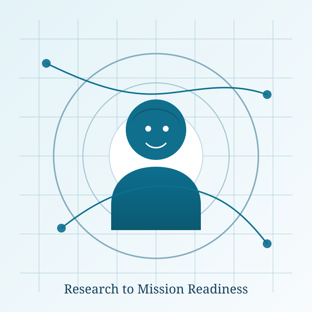
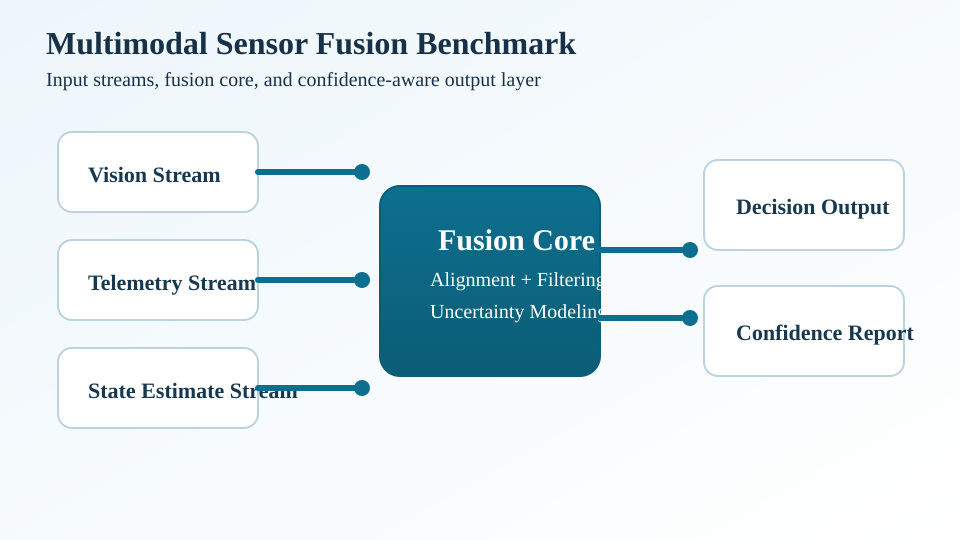
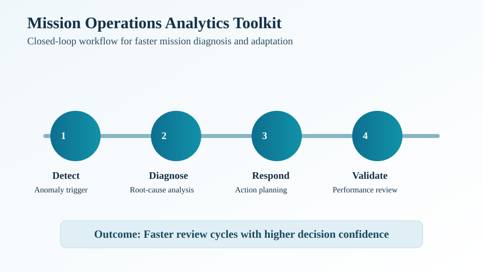

Multi-Instrument Gravity Wave Analysis
Combining AWE, AIRS, GNSS TEC, and related observations to characterize gravity wave sources, propagation, and response patterns over CONUS.
Atmospheric & Space Physics Research
I develop multi-instrument analysis pipelines to study deep convective events and gravity wave responses from the lower atmosphere to near-space.

About
My current work focuses on gravity wave science using coordinated observations from AWE, AIRS, GNSS TEC, and supporting optical systems. The goal is to better resolve how deep convection drives wave activity and how those responses evolve across scales.
I build workflows that connect data acquisition, calibration, projection, and analysis so research results are repeatable and technically reviewable. This includes camera geometry handling, timeline alignment, map projection, and diagnostics across large image collections.
I am especially interested in collaborations spanning academia and mission-driven programs where transparent methods, reproducibility, and measurable outcomes are essential.
Research Themes
Combining AWE, AIRS, GNSS TEC, and related observations to characterize gravity wave sources, propagation, and response patterns over CONUS.
Developing processing chains for airborne and ground-based camera systems, including calibration, georeferencing, and consistent map-ready outputs.
Linking observations with physics-based modeling workflows to support interpretation, cross-validation, and broader geospace context.
Featured Projects
Impact: Established a unified framework to analyze deep convective events and their gravity wave responses over CONUS.
Methods/Tools: AWE, AIRS, GNSS TEC, LLITED, multi-instrument co-registration.
Impact: Streamlined end-to-end image processing from camera preprocessing to synchronized map products and optional NetCDF exports.
Methods/Tools: MATLAB + `cgcam` package, IWG1 aircraft telemetry, flat-field corrections, geospatial projection.

Impact: Built extended-reality examples to support clearer communication of atmospheric and geospace science results.
Methods/Tools: AR.js workflows, web visualization, reproducible examples with DOI archiving.

Impact: Supported model-informed interpretation of observations through reproducible simulation and analysis workflows.
Methods/Tools: GEMINI3D ecosystem, HDF5 pipelines, model/data comparison analysis.
CV & Credentials
ORCID and social profile links can be finalized before public launch.
Selected Outputs
Contact
If you are interested in research partnerships, internship mentorship, technical reviews, or invited talks, email me directly with your goals and timeline.